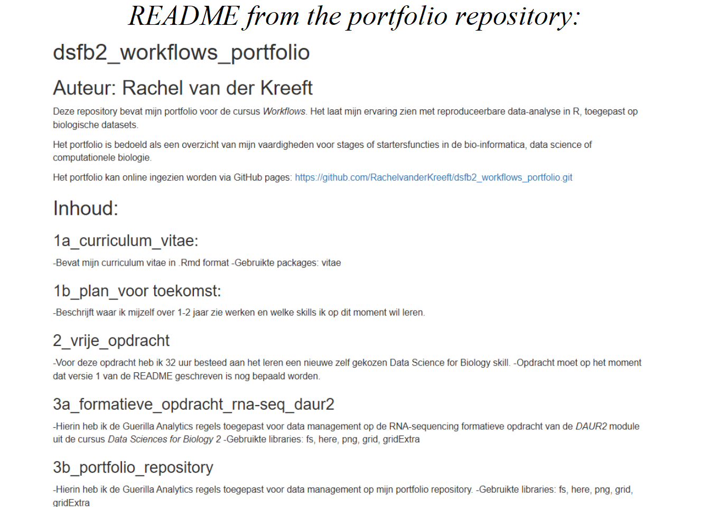

6 Portfolio repository
## ~/documents/dsfb2/dsfb2_workflows_portfolio/dsfb2_workflows_portfolio
## ├── bookdown
## │ ├── 01-curriculum_vitae.md
## │ ├── 01-curriculum_vitae.Rmd
## │ ├── 02-plan_voor_de_toekomst.md
## │ ├── 02-plan_voor_de_toekomst.Rmd
## │ ├── 03-vrije_opdracht.md
## │ ├── 03-vrije_opdracht.Rmd
## │ ├── 04-formatieve_opdracht_rna-seq_daur2.md
## │ ├── 04-formatieve_opdracht_rna-seq_daur2.Rmd
## │ ├── 04-formatieve_opdracht_rna-seq_daur2_files
## │ │ ├── figure-epub3
## │ │ │ ├── readme-1.png
## │ │ │ └── readme-2.png
## │ │ ├── figure-html
## │ │ │ ├── readme-1.png
## │ │ │ └── readme-2.png
## │ │ └── figure-latex
## │ │ ├── readme-1.pdf
## │ │ └── readme-2.pdf
## │ ├── 05-portfolio_repository.Rmd
## │ ├── 05-portfolio_repository_files
## │ │ ├── figure-epub3
## │ │ │ └── readme-1.png
## │ │ ├── figure-html
## │ │ │ └── readme-1.png
## │ │ └── figure-latex
## │ │ └── readme-1.pdf
## │ ├── 06-data_analyse_van_een_ander_reproduceren.Rmd
## │ ├── 06-data_analyse_van_een_ander_reproduceren_files
## │ │ ├── figure-epub3
## │ │ │ ├── normalised scatterplot-1.png
## │ │ │ └── Scatterplot-1.png
## │ │ ├── figure-html
## │ │ │ ├── normalised scatterplot-1.png
## │ │ │ └── Scatterplot-1.png
## │ │ └── figure-latex
## │ │ ├── normalised scatterplot-1.pdf
## │ │ └── Scatterplot-1.pdf
## │ ├── 07-artikel_beoordelen_op_reproduceerbaarheid.Rmd
## │ ├── 07-artikel_beoordelen_op_reproduceerbaarheid_files
## │ │ ├── figure-epub3
## │ │ │ └── ggplot-1.png
## │ │ ├── figure-html
## │ │ │ └── ggplot-1.png
## │ │ └── figure-latex
## │ │ └── ggplot-1.pdf
## │ ├── 08-r_package.Rmd
## │ ├── 09-bronvermelding.Rmd
## │ ├── 10-geparametrizeerde_rmarkdown.Rmd
## │ ├── bibliography.bib
## │ ├── bookdown-demo.tex
## │ ├── bookdown-portfolio.rds
## │ ├── bookdown-portfolio.Rproj
## │ ├── covid_Netherlands_2022_7-12.html
## │ ├── curriculum_vitae.html
## │ ├── DESCRIPTION
## │ ├── Dockerfile
## │ ├── index.md
## │ ├── index.Rmd
## │ ├── LICENSE
## │ ├── now.json
## │ ├── packages.bib
## │ ├── preamble.tex
## │ ├── render33104ee4804.rds
## │ ├── style.css
## │ ├── toc.css
## │ ├── vancouver-ama.csl
## │ ├── _book
## │ │ ├── 01-curriculum_vitae.md
## │ │ ├── 010-geparametrizeerde_rmarkdown.md
## │ │ ├── 02-plan_voor_de_toekomst.md
## │ │ ├── 03-vrije_opdracht.md
## │ │ ├── 04-formatieve_opdracht_rna-seq_daur2.md
## │ │ ├── 04-formatieve_opdracht_rna-seq_daur2_files
## │ │ │ └── figure-html
## │ │ │ ├── readme-1.png
## │ │ │ └── readme-2.png
## │ │ ├── 05-portfolio_repository.md
## │ │ ├── 05-portfolio_repository_files
## │ │ │ └── figure-html
## │ │ │ └── readme-1.png
## │ │ ├── 06-data_analyse_van_een_ander_reproduceren.md
## │ │ ├── 06-data_analyse_van_een_ander_reproduceren_files
## │ │ │ └── figure-html
## │ │ │ ├── normalised scatterplot-1.png
## │ │ │ └── Scatterplot-1.png
## │ │ ├── 07-artikel_beoordelen_op_reproduceerbaarheid.md
## │ │ ├── 07-artikel_beoordelen_op_reproduceerbaarheid_files
## │ │ │ └── figure-html
## │ │ │ └── ggplot-1.png
## │ │ ├── 08-r_package.md
## │ │ ├── 09-bronvermelding.md
## │ │ ├── 10-geparametrizeerde_rmarkdown.md
## │ │ ├── 404.html
## │ │ ├── artikel-beoordelen-op-reproduceerbaarheid.html
## │ │ ├── bookdown-portfolio.epub
## │ │ ├── bookdown-portfolio.pdf
## │ │ ├── bookdown-portfolio.tex
## │ │ ├── bronvermelding.html
## │ │ ├── covid_Netherlands_2022_7-12.html
## │ │ ├── curriculum-vitae.html
## │ │ ├── curriculum_vitae.html
## │ │ ├── data-analyse-van-een-ander-reproduceren.html
## │ │ ├── een-data-analyse-van-een-ander-reproduceren.html
## │ │ ├── geparametrizeerde-rmarkdown.html
## │ │ ├── geparametrizeerde_rmarkdown.html
## │ │ ├── index.html
## │ │ ├── index.md
## │ │ ├── libs
## │ │ │ ├── anchor-sections-1.1.0
## │ │ │ │ ├── anchor-sections-hash.css
## │ │ │ │ ├── anchor-sections.css
## │ │ │ │ └── anchor-sections.js
## │ │ │ ├── bootstrap-4.6.0
## │ │ │ │ ├── bootstrap.bundle.min.js
## │ │ │ │ ├── bootstrap.min.css
## │ │ │ │ └── fonts
## │ │ │ │ └── bootstrap
## │ │ │ │ ├── glyphicons-halflings-regular.eot
## │ │ │ │ ├── glyphicons-halflings-regular.svg
## │ │ │ │ ├── glyphicons-halflings-regular.ttf
## │ │ │ │ ├── glyphicons-halflings-regular.woff
## │ │ │ │ └── glyphicons-halflings-regular.woff2
## │ │ │ ├── bs3compat-0.10.0
## │ │ │ │ ├── bs3compat.js
## │ │ │ │ ├── tabs.js
## │ │ │ │ └── transition.js
## │ │ │ ├── bs4_book-1.0.0
## │ │ │ │ ├── bs4_book.css
## │ │ │ │ └── bs4_book.js
## │ │ │ ├── gitbook-2.6.7
## │ │ │ │ ├── css
## │ │ │ │ │ ├── fontawesome
## │ │ │ │ │ │ └── fontawesome-webfont.ttf
## │ │ │ │ │ ├── plugin-bookdown.css
## │ │ │ │ │ ├── plugin-clipboard.css
## │ │ │ │ │ ├── plugin-fontsettings.css
## │ │ │ │ │ ├── plugin-highlight.css
## │ │ │ │ │ ├── plugin-search.css
## │ │ │ │ │ ├── plugin-table.css
## │ │ │ │ │ └── style.css
## │ │ │ │ └── js
## │ │ │ │ ├── app.min.js
## │ │ │ │ ├── clipboard.min.js
## │ │ │ │ ├── jquery.highlight.js
## │ │ │ │ ├── plugin-bookdown.js
## │ │ │ │ ├── plugin-clipboard.js
## │ │ │ │ ├── plugin-fontsettings.js
## │ │ │ │ ├── plugin-search.js
## │ │ │ │ └── plugin-sharing.js
## │ │ │ └── jquery-3.6.0
## │ │ │ └── jquery-3.6.0.min.js
## │ │ ├── plan-voor-de-toekomst.html
## │ │ ├── portfolio-repository.html
## │ │ ├── portfoliotools.html
## │ │ ├── r-package.html
## │ │ ├── rna-sequencing-repository.html
## │ │ ├── search.json
## │ │ ├── search_index.json
## │ │ ├── style.css
## │ │ └── vrije-opdracht.html
## │ ├── _bookdown.yml
## │ ├── _bookdown_files
## │ ├── _build.sh
## │ ├── _deploy.sh
## │ ├── _output.yml
## │ └── _publish.R
## ├── docs
## │ ├── 01-curriculum_vitae.md
## │ ├── 02-plan_voor_de_toekomst.md
## │ ├── 03-vrije_opdracht.md
## │ ├── 04-formatieve_opdracht_rna-seq_daur2.md
## │ ├── 04-formatieve_opdracht_rna-seq_daur2_files
## │ │ └── figure-html
## │ │ ├── readme-1.png
## │ │ └── readme-2.png
## │ ├── 05-portfolio_repository.md
## │ ├── 05-portfolio_repository_files
## │ │ └── figure-html
## │ │ └── readme-1.png
## │ ├── 06-data_analyse_van_een_ander_reproduceren.md
## │ ├── 06-data_analyse_van_een_ander_reproduceren_files
## │ │ └── figure-html
## │ │ ├── normalised scatterplot-1.png
## │ │ └── Scatterplot-1.png
## │ ├── 07-artikel_beoordelen_op_reproduceerbaarheid.md
## │ ├── 07-artikel_beoordelen_op_reproduceerbaarheid_files
## │ │ └── figure-html
## │ │ └── ggplot-1.png
## │ ├── 404.html
## │ ├── artikel-beoordelen-op-reproduceerbaarheid.html
## │ ├── curriculum-vitae.html
## │ ├── curriculum_vitae.html
## │ ├── data-analyse-van-een-ander-reproduceren.html
## │ ├── een-data-analyse-van-een-ander-reproduceren.html
## │ ├── index.html
## │ ├── index.md
## │ ├── libs
## │ │ ├── anchor-sections-1.1.0
## │ │ │ ├── anchor-sections-hash.css
## │ │ │ ├── anchor-sections.css
## │ │ │ └── anchor-sections.js
## │ │ ├── gitbook-2.6.7
## │ │ │ ├── css
## │ │ │ │ ├── fontawesome
## │ │ │ │ │ └── fontawesome-webfont.ttf
## │ │ │ │ ├── plugin-bookdown.css
## │ │ │ │ ├── plugin-clipboard.css
## │ │ │ │ ├── plugin-fontsettings.css
## │ │ │ │ ├── plugin-highlight.css
## │ │ │ │ ├── plugin-search.css
## │ │ │ │ ├── plugin-table.css
## │ │ │ │ └── style.css
## │ │ │ └── js
## │ │ │ ├── app.min.js
## │ │ │ ├── clipboard.min.js
## │ │ │ ├── jquery.highlight.js
## │ │ │ ├── plugin-bookdown.js
## │ │ │ ├── plugin-clipboard.js
## │ │ │ ├── plugin-fontsettings.js
## │ │ │ ├── plugin-search.js
## │ │ │ └── plugin-sharing.js
## │ │ └── jquery-3.6.0
## │ │ └── jquery-3.6.0.min.js
## │ ├── plan-voor-de-toekomst.html
## │ ├── portfolio-repository.html
## │ ├── reference-keys.txt
## │ ├── rna-sequencing-repository.html
## │ ├── search_index.json
## │ ├── style.css
## │ └── vrije-opdracht.html
## ├── dsfb2_workflows_portfolio.Rproj
## ├── projecten
## │ ├── 1a_curriculum_vitae
## │ │ ├── curriculum_vitae.html
## │ │ ├── curriculum_vitae.Rmd
## │ │ ├── fonts
## │ │ │ ├── academicons.eot
## │ │ │ ├── academicons.svg
## │ │ │ ├── academicons.ttf
## │ │ │ └── academicons.woff
## │ │ ├── LICENSE
## │ │ ├── media
## │ │ │ ├── academicons.min.css
## │ │ │ ├── blmoore-print.css
## │ │ │ ├── blmoore-screen.css
## │ │ │ ├── ccbaumler-print.css
## │ │ │ ├── ccbaumler-screen.css
## │ │ │ ├── davewhipp-print.css
## │ │ │ ├── davewhipp-screen.css
## │ │ │ ├── kjhealy-print.css
## │ │ │ └── kjhealy-screen.css
## │ │ └── packages.bib
## │ ├── 1b_plan_voor_de_toekomst
## │ │ ├── plan_voor_de_toekomst.html
## │ │ ├── plan_voor_de_toekomst.Rmd
## │ │ └── README.md
## │ ├── 2_vrije_opdracht
## │ │ ├── achtergrond
## │ │ │ ├── NGS WGS presentatie.pptx
## │ │ │ ├── Presentatie Parodontitis 16s sequencing eindversie.pptx
## │ │ │ └── Resultaten lab parodontitis project.xlsx
## │ │ ├── analyses
## │ │ │ ├── nanoplot_filtered
## │ │ │ │ ├── NanoPlot-report.html
## │ │ │ │ ├── NanoStats.txt
## │ │ │ │ └── read_length_vs_quality_filtered.png
## │ │ │ ├── nanoplot_not_filtered
## │ │ │ │ ├── NanoPlot-report.html
## │ │ │ │ ├── NanoStats.txt
## │ │ │ │ └── read_length_vs_quality_not_filtered.png
## │ │ │ └── original_projecticum_analysis
## │ │ │ └── read_length_vs_quality_filtered_original analysis.png
## │ │ ├── data
## │ │ ├── logboek_vrije_opdracht.xlsx
## │ │ ├── metadata
## │ │ │ └── overzicht_gebruikte_flowcells.xlsx
## │ │ ├── raw_data
## │ │ ├── README.md
## │ │ ├── scripts
## │ │ ├── verslag
## │ │ ├── vrije_opdracht.html
## │ │ ├── vrije_opdracht.Rmd
## │ │ ├── vrije_opdracht_voorbereiding.html
## │ │ └── vrije_opdracht_voorbereiding.Rmd
## │ ├── 3a_formatieve_opdracht_rna-seq_daur2
## │ │ ├── formatieve_opdracht_rna-seq_daur2.html
## │ │ ├── formatieve_opdracht_rna-seq_daur2.Rmd
## │ │ ├── readme_screenshot_3a_1.png
## │ │ ├── readme_screenshot_3a_2.png
## │ │ └── rnaseq_ipsc
## │ │ ├── analyses
## │ │ │ └── fastqc
## │ │ │ ├── SRR7866687_1.fastq.html
## │ │ │ ├── SRR7866687_1.fastq.zip
## │ │ │ ├── SRR7866687_2.fastq.html
## │ │ │ ├── SRR7866687_2.fastq.zip
## │ │ │ ├── SRR7866688_1.fastq.html
## │ │ │ ├── SRR7866688_1.fastq.zip
## │ │ │ ├── SRR7866688_2.fastq.html
## │ │ │ ├── SRR7866688_2.fastq.zip
## │ │ │ ├── SRR7866689_1.fastq.html
## │ │ │ ├── SRR7866689_1.fastq.zip
## │ │ │ ├── SRR7866689_2.fastq.html
## │ │ │ ├── SRR7866689_2.fastq.zip
## │ │ │ ├── SRR7866690_1.fastq.html
## │ │ │ ├── SRR7866690_1.fastq.zip
## │ │ │ ├── SRR7866690_2.fastq.html
## │ │ │ ├── SRR7866690_2.fastq.zip
## │ │ │ ├── SRR7866691_1.fastq.html
## │ │ │ ├── SRR7866691_1.fastq.zip
## │ │ │ ├── SRR7866691_2.fastq.html
## │ │ │ ├── SRR7866691_2.fastq.zip
## │ │ │ ├── SRR7866692_1.fastq.html
## │ │ │ ├── SRR7866692_1.fastq.zip
## │ │ │ ├── SRR7866692_2.fastq.html
## │ │ │ ├── SRR7866692_2.fastq.zip
## │ │ │ ├── SRR7866693_1.fastq.html
## │ │ │ ├── SRR7866693_1.fastq.zip
## │ │ │ ├── SRR7866693_2.fastq.html
## │ │ │ ├── SRR7866693_2.fastq.zip
## │ │ │ ├── SRR7866694_1.fastq.html
## │ │ │ ├── SRR7866694_1.fastq.zip
## │ │ │ ├── SRR7866694_2.fastq.html
## │ │ │ └── SRR7866694_2.fastq.zip
## │ │ ├── data
## │ │ │ ├── alignment
## │ │ │ │ ├── alignment_statistics.rds
## │ │ │ │ ├── SRR7866687.bam
## │ │ │ │ ├── SRR7866687.bam.indel.vcf
## │ │ │ │ ├── SRR7866687.bam.summary
## │ │ │ │ ├── SRR7866688.bam
## │ │ │ │ ├── SRR7866688.bam.indel.vcf
## │ │ │ │ ├── SRR7866688.bam.summary
## │ │ │ │ ├── SRR7866689.bam
## │ │ │ │ ├── SRR7866689.bam.indel.vcf
## │ │ │ │ ├── SRR7866689.bam.summary
## │ │ │ │ ├── SRR7866690.bam
## │ │ │ │ ├── SRR7866690.bam.indel.vcf
## │ │ │ │ ├── SRR7866690.bam.summary
## │ │ │ │ ├── SRR7866691.bam
## │ │ │ │ ├── SRR7866691.bam.indel.vcf
## │ │ │ │ ├── SRR7866691.bam.summary
## │ │ │ │ ├── SRR7866692.bam
## │ │ │ │ ├── SRR7866692.bam.indel.vcf
## │ │ │ │ ├── SRR7866692.bam.summary
## │ │ │ │ ├── SRR7866693.bam
## │ │ │ │ ├── SRR7866693.bam.indel.vcf
## │ │ │ │ ├── SRR7866693.bam.summary
## │ │ │ │ ├── SRR7866694.bam
## │ │ │ │ ├── SRR7866694.bam.indel.vcf
## │ │ │ │ └── SRR7866694.bam.summary
## │ │ │ └── counts
## │ │ │ └── read_counts.rds
## │ │ ├── formatieve_opdracht_iPSC.Rmd
## │ │ ├── raw_data
## │ │ │ ├── fastq
## │ │ │ │ ├── SRR7866687_1.fastq.gz
## │ │ │ │ ├── SRR7866687_2.fastq.gz
## │ │ │ │ ├── SRR7866688_1.fastq.gz
## │ │ │ │ ├── SRR7866688_2.fastq.gz
## │ │ │ │ ├── SRR7866689_1.fastq.gz
## │ │ │ │ ├── SRR7866689_2.fastq.gz
## │ │ │ │ ├── SRR7866690_1.fastq.gz
## │ │ │ │ ├── SRR7866690_2.fastq.gz
## │ │ │ │ ├── SRR7866691_1.fastq.gz
## │ │ │ │ ├── SRR7866691_2.fastq.gz
## │ │ │ │ ├── SRR7866692_1.fastq.gz
## │ │ │ │ ├── SRR7866692_2.fastq.gz
## │ │ │ │ ├── SRR7866693_1.fastq.gz
## │ │ │ │ ├── SRR7866693_2.fastq.gz
## │ │ │ │ ├── SRR7866694_1.fastq.gz
## │ │ │ │ └── SRR7866694_2.fastq.gz
## │ │ │ └── ipsc_sampledata
## │ │ │ └── ipsc_sampledata.csv
## │ │ ├── README.md
## │ │ ├── reference
## │ │ │ └── hg38_index
## │ │ │ ├── hg38_index.00.b.array
## │ │ │ ├── hg38_index.00.b.tab
## │ │ │ ├── hg38_index.files
## │ │ │ ├── hg38_index.log
## │ │ │ └── hg38_index.reads
## │ │ └── scripts
## │ │ ├── aligning_reads.Rmd
## │ │ ├── annotation_DE_genes.R
## │ │ ├── correlations_heatmap.R
## │ │ ├── count_plots.R
## │ │ ├── count_table.R
## │ │ ├── deseq_object.Rmd
## │ │ ├── dge_analysis.R
## │ │ ├── fastqc_analysis.sh
## │ │ ├── fastq_download.sh
## │ │ ├── go_term_enrichment_analysis.R
## │ │ ├── heatmap_scaling.R
## │ │ ├── normalizing_RNA-seq_count_data.R
## │ │ ├── principal_component_analysis.R
## │ │ ├── volcano_plots.R
## │ │ └── workflow.Rmd
## │ ├── 3b_portfolio_repository
## │ │ ├── portfolio_repository.html
## │ │ ├── portfolio_repository.Rmd
## │ │ └── readme_screenshot.png
## │ ├── 4a_data_analyse_van_een_ander_reproduceren
## │ │ ├── CE.LIQ.FLOW.062_Tidydata.xlsx
## │ │ ├── data_analyse_van_een_ander_reproduceren.html
## │ │ └── data_analyse_van_een_ander_reproduceren.Rmd
## │ ├── 4b_artikel_beoordelen_op_reproduceerbaarheid
## │ │ ├── 4b_artikel_beoordelen_op_reproduceerbaarheid.html
## │ │ ├── 4b_artikel_beoordelen_op_reproduceerbaarheid.Rmd
## │ │ └── Death data(18-64).xlsx
## │ ├── 7_bronvermelding
## │ │ ├── 7_bronvermelding.html
## │ │ ├── 7_bronvermelding.Rmd
## │ │ ├── bibliography.bib
## │ │ └── vancouver-ama.csl
## │ └── 8_geparametrizeerde_rmarkdown
## │ ├── covid-19_in_europa.html
## │ ├── covid-19_in_europa.Rmd
## │ ├── covid-19_in_europa_static_version.Rmd
## │ ├── covid_Netherlands_2022_7-12.html
## │ ├── data.csv
## │ ├── data.xlsx
## │ └── render_covid-19_in_europa_reports.R
## ├── prompts
## │ └── artikel_beoordelen_op_reproduceerbaarheid
## ├── README.html
## └── README.md